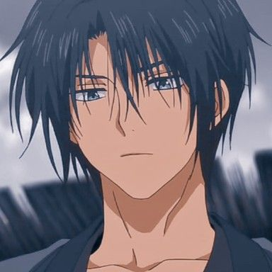
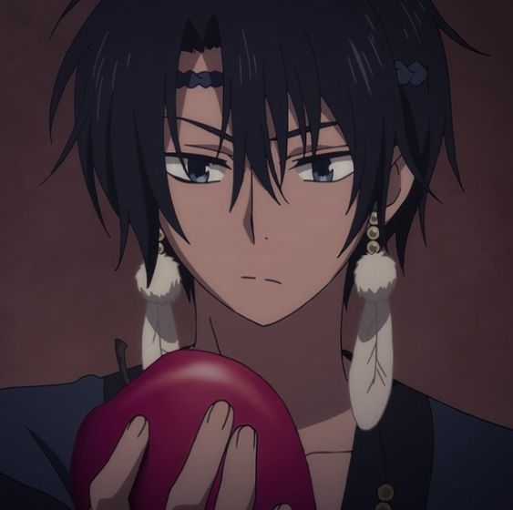
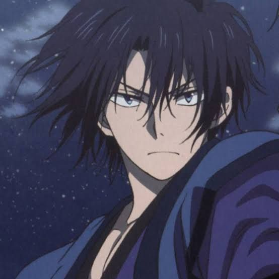
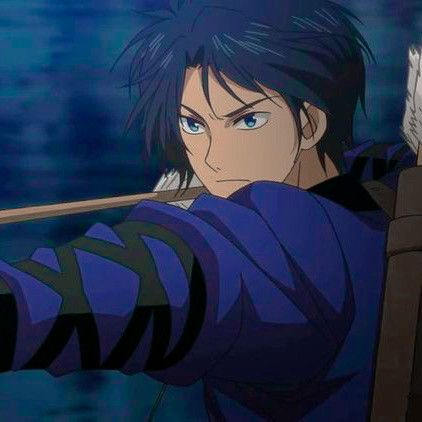

Anime Passion
Anime Passion
Son Hak
Hak (ハク, Haku), anteriormente llamado Son Hak (ソン・ハク Son Haku), es el antiguo general de la Tribu de Viento y guardaespaldas de Yona. Él es el nieto adoptivo de Son Mundok. Fue reconocido por su fuerza inigualable en el Castillo Hiryuu desde muy temprana edad.
A los quince años, el emperador II le pidió se convirtiera en guardaespaldas de la princesa, al principio Hak se negó, pero después de cierto incidente con Tae-Jun, cambió su parecer y decidió aceptar el cargo de guardaespaldas personal de Yona.
Luego de la muerte del rey Il, Hak escapó del castillo con Yona para protegerla.
Apariencia

Hak es un hombre atractivo, alto y de contextura dura y muscular. Tiene el cabello negro y despeinado, y ojos color celeste (que dependiendo de su emociones su mírar se vuelve aún más intenso). Generalmente viste una especie de kimono azul-violeta debajo de una chaqueta azul. Lleva zapatos oscuros y tiene atadas las mangas de su traje. Además de llevar siempre su lanza consigo (Hsu Quandao).
Cuando estaba en la Tribu de Viento llevaba las ropas características del lugar, que consistían en un kimono azul pálido con bordes rojos sobre un traje de mangas anchas y zapatos oscuros.
Personalidad

Hak tiene una personalidad un tanto seria (muy acorde a su antigua posición de general) y a la vez amable; él es extremadamente fiel al antiguo emperador y a Yona, hasta el punto de sacrificar su vida por ella, lo que demuestra que es un hombre demasiado noble. También, él ha mostrado ser un poco bromista, especialmente con Yona y Kija.
Es un joven muy honesto. También es valiente, lo cual lo ha demostrado varias veces a lo largo del manga. Actualmente él ya siente un aprecio muy grande por todos los dragones y Yoon, a quienes agradece que estén viajando con ellos y se preocupen por la princesa. Actualmente Hak no sólo se sacrificaría por Yona, sino también por sus amigos.
Él está en calma la mayor parte del tiempo, pero fácilmente pierde la compostura cuando Yona le sorprende o cada vez que está en grave peligro. Zeno comentó que él tiene "olor a muerte en él", demostrado cuando estuvo frente a frente con Soo-Won, Hak se llenó de ira e intentó matarlo, sin importarle a quién lastimaba en el intento. Aunque en los recientes capítulos del manga, Hak por primera vez tuvo un monólogo en donde habla sobre su sentír hacía Soo-Won, demostrando que Hak realmente no lo odia, pero aún no comprende el porqué del actuar del actual rey de Kouka.
Historia

Cuando tenía 2 años, Hak quedó huérfano luego de que sus padres murieran víctimas de la guerra de Xing.[3] Fue adoptado por Son Mundok, el entonces líder de la Tribu del Viento, quien lo crió como su propio nieto y lo entrenó en sus habilidades de la lanza. Hak es realmente alguien muy especial para Mundok, quien repetidamente le ínsta para que le llame abuelo aunque no compartan lazos sanguíneos, pero igual Hak a veces no lo hace y le llama "viejo". Desde pequeño, él ha sido un amigo íntimo de Yona y de Soo-Won, con quienes pasaba el rato y dormían juntos.
A la edad de nueve años podría ser el punto en que Hak comienza a desarrollar un sentimiento especial hacia Yona, después de que ésta fuera secuestrada por unos sujetos y rescatada por él y Soo-Won, y en la emoción de haber sido salvada, abrazó a Hak haciéndolo sonrojar un poco.
A los trece años Hak ya era lo suficientemente fuerte como para derrotar a Lee Geun-Tae y Joo-Doh, quienes ya era generales en ese entonces. A los quince años se convirtió en el guardaespaldas personal de Yona. Inicialmente el Emperador Il se lo sugirió, pero Hak no aceptó sino hasta que la defendió de Kan Tae-Jun, quien intententaba insistentemente en cortejarla.
Hablidades

Hak es extremadamente habilidoso en el manejo de la espada y lanza, además de ser extremadamente fuerte en combates físicos.
Manejo de lanza (Hsu Quandao/Hoja lunar): Es extremadamente hábil en el manejo de la misma, a pesar de que normalmente es un arma muy pesada.
Fuerza extrema: Hak era el general más fuerte de las cinco Tribus. Aún sin su lanza, la fuerza de Hak es tanta que podría estar igualada a la de los dragones.
Tiro con arco: Hak ha demostrado en numerosas ocasiones ser extremadamente bueno con el arco. Además, fue quien enseñó a Yona a usar dicha arma.
Persistencia: Hak es extremadamente persistente a ataques o golpes, demostrado cuando fue mordido por una serpiente sin sufrir secuelas o cuando cayó de un precipicio recibiendo todos los daños. Aunque también podría ser debido a su determinación para seguir viviendo y proteger a Yona. Otro ejemplo también tiene lugar durante el capítulo 91 del manga, en el que perdió el control y ni al propio Jae-ha le fue fácil dentenerlo.
Sabiduría: Al ser un antiguo general, él se muestra bien informado sobre las diferentes áreas del reino y estrategias militares de las distintas tribus, siendo de gran ayuda cuando estaban buscando a los dragones.
Opening
Créditos
- https://akatsukinoyona.fandom.com/es/wiki/Hak
- https://i.pinimg.com/564x/b5/87/53/b587536943db5ea25ad5835f19084318.jpg
- https://i.pinimg.com/564x/1d/72/13/1d7213068b83b52e024b5d1ca5b99cc9.jpg
- https://i.pinimg.com/564x/35/64/ad/3564ad10fc5c13d7cac2018b206effb4.jpg
- https://i.pinimg.com/originals/41/b1/a5/41b1a53c65fd8de1452f1f0690ef49d5.gif
- https://www.youtube.com/watch?v=3Tz3vxwJf6I